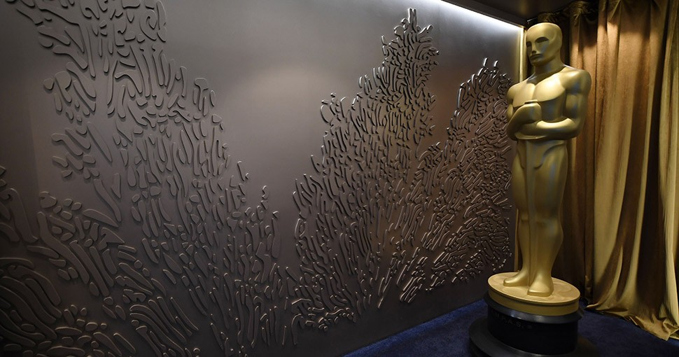

Conoce los horarios por días del Festival Estéreo Picnic 2019
El viernes 5, sábado 6 y domingo 7 de abril el cono norte de nuestro continente celebrará la décima edición de Un Mundo Distinto.
Conoce los horarios para que prepares los tres mejores días del año con tus artistas favoritos.
El viernes tres poderosas mujeres y un trío argentino abrirán la fiesta. Silvina Moreno, Mabiland, Usted Señálemelo y Ximena Sariñana estarán, consecutivamente, dándole vida a los Escenarios Adidas y Axe. The Kitsch serán quienes inauguren el Escenario Tigo, Alcolirykoz protagonizarán uno de los momentos más coreados como la antesala del show de Interpol a las 8pm. Luego será el turno para dos actos fundamentales de nuestra época: Twenty Øne Piløts y Kendrick Lamar con un cierre a la medianoche. El primer día del Festival ofrecerá un recorrido ecléctico y actual con shows consagrados como el rapero de Compton y otros esperando estallar como el neo trap bogotano.
El sábado viviremos la fiesta más grande de la década con una jornada en honor a la pista de baile y las palmas elevadas. Indie folk, hip hop, sonidos del pacífico, punk, electrónica y salsa. El Escenario Axe verá pasar a Absalón y Afropacífico, Pedrina, Erlend Øye, La Payara, Mitú y Nicola Cruz. El Escenario Adidas se estremecerá con Alejandro y Maria Laura, Apache, Fidlar, ZHU, Disclosure (DJ Set) y Tiësto. El Escenario Tigo será el epicentro del baile con TSH Sudaca, Rhye, Portugal. The Man, Grupo Niche y Underworld. El segundo día del FEPX tendrá una curva ascendente en su espíritu fiestero y demostrará que en Colombia bailamos por igual salsa, techno, hip hop o house.
¡Bogotá respira rock con la llegada del 'Carnaval Fest 2018'!
Los apasionados músicos de la ciudad de Medellín a través de su Corporación Cultural Tr3sdeCoraZón han sido los organizadores de Carnaval Fest durante 14 años (antes llamado Concierto de la juventud) en su ciudad natal. Este espacio para los jóvenes de Antioquia se ha posicionado como uno de los más importantes en materia de música y cultura, integrando diferentes géneros musicales en un mismo escenario y promoviendo la sana convivencia.
Este año, el Carnaval Fest tiene el propósito de cruzar barreras regionales y realizarse por primera vez en la capital colombiana. En este festival se busca mostrar el talento de tres ciudades (Medellín, Cali y Bogotá) en uno de los escenarios más emblemáticos de la ciudad, fortaleciendo la idea de unión través del rock y la música, y derrumbando el paradigma de un país dividido por regiones, ideologías, etc… demostrando que hay más elementos que unen al país y que generan unión y en los eventos masivos, personas de todos los rincones de Colombia se reunen a compartir en torno a la música. Será un día de rock donde confluirán diferentes géneros y agrupaciones que representarán a Medellín, Cali, Bogotá.
Los rockeros celebran sus 16 años de trayectoria trasladando el Festival a la ciudad de Bogotá ligado a una gira promocional de 'Como si fuera ayer'. Este disco doble está compuesto por canciones inéditas, 'Covers' conformado por versiones de artistas importantes para el grupo,'Hijos del Titán' que es un tributo a Kraken y a su fallecido líder Elkin Ramírez, 'Mi canto es la voz del que está atrás', hecho con canciones de otros discos de la banda pero en formato en vivo y 'El día que formamos una banda de rock' también con temas antiguos pero regrabados con invitados especiales.
El Ballet Clásico de Rusia llega por primera vez a Colombia
En su gira latinoamericana presentarán ‘Romeo y Julieta’ el 24 de abril en el Teatro ABC.
El cuerpo de baile lo integran bailarines de Moscú, San Petersburgo, Novosibirsk y Perm.
Romeo y Julieta es la obra que trae el Ballet Clásico de Rusia a Bogotá en la que se destaca cada detalle en el vestuario y la danza, que reflejan la investigación histórica de la obra.
Romeo y Julieta jamás podrán estar juntos.
La tragedia de su amor está predestinada: para empezar por sus familias, eternas enemigas, y después por el capricho adolescente de su afecto. Amor, deseo, rencor y muerte.
El arte ha continuado por siglos multiplicando el trabajo de Shakespeare, inspirándose y reinterpretando el conflicto entre los Montesco y los Capuleto.
El ballet que se presentará el próximo 24 de abril, en el Teatro ABC, de Bogotá a las 8:00 p.m., es precisamente la versión que nunca se había visto en Colombia.
A cargo de la compañía Russian Classical Ballet, una de las mejores del mundo: 27 bailarines pondrán en escena la coreografía que acompaña la composición musical más completa de Romeo y Julieta.
Se trata de la versión más clásica, que reúne la memorable música de Serguey Prokófiev, con la coreografía concebida por Leonid Lavrosky.
Bailada en dos actos y un epílogo, Romeo y Julieta es considerada como la obra de referencia para los principales coreógrafos, adaptándola para lograr transformar la historia escrita en una encantadora obra maestra del ballet clásico.
La obra ‘Celui Qui Tombe’ podrá ser vista en vivo a través de Teatro Digital
‘Celui Qui Tombe’ podrá ser vista también en la fanpage de Teatro Mayor Julio Mario Santo Domingo y por YouTube.
Llega al Teatro Mayor Julio Mario Santo Domingo el Centro Coreográfico Nacional de Grenoble con su obra Celui Qui Tombe, que combina teatro, circo y danza, en la que seis acróbatas desafían las leyes de la gravedad y tratan de mantener el equilibrio sobre una imponente plataforma suspendida que choca, rueda, tambalea y se eleva.
Ellos trepan, se cuelgan y caen, juntos o separados en esta peligrosa danza de la supervivencia que será transmitida por Teatro Digital el sábado 2 de febrero, a las ocho de la noche a través de www.teatrodigital.org, la fanpage de Facebook y el canal de YouTube.

Teatro Digital realizará el lanzamiento del 51 Festival de la Leyenda Vallenata
En esta ocasión participan los reyes de reyes del Festival de la Leyenda Vallenata 2017, (acordeón profesional, canción vallenata inédita y piqueria) y los reyes vallenatos del acordeón 2017 (infantil, juvenil y aficionado).
Para que nadie se pierda este importante evento de la cultura colombiana, Teatro Digital lo transmite en vivo el sábado 21 de abril, a las 8:00 p.m. a través de www.teatrodigital.org y la página de Facebook del Teatro Mayor.
El Teatro Digital es una iniciativa de responsabilidad social del Teatro Mayor Julio Mario Santo Domingo, en alianza con Bancolombia, que busca garantizar ‘una entrada para todos’ a los mejores espectáculos de Colombia y del mundo, en tiempo real y de manera totalmente gratuita.
Gracias al Teatro Digital, el público puede tener una experiencia de muy alta calidad en video y sonido a través una plataforma de streaming que permite ajustar la calidad del video dependiendo del tipo de conexión con que cuente el espectador: desde HD hasta baja resolución.
Transmisión en vivo: sábado 21 de abril a las 8:00 p.m. a través de www.teatrodigital.org y la página de Facebook del Teatro Mayor.
El concierto
Acto I
Presentación de los reyes vallenatos José Alejandro Aldana (infantil), José Juan Camilo Guerra (juvenil), Daniel de Jesús Holguín (aficionado) y Álvaro López (rey de reyes).
Acto II
Presentación del rey de reyes de la Piqueria José Félix Ariza y un contendor invitado, quienes se enfrentarán en un duelo, pique o enfrentamiento con versos cargados de mucha picardía y versatilidad.
Acto III
Presentación del rey de reyes de la Canción Vallenata Inédita, Ivo Luis Díaz Ramos, con su compañero de fórmula musical, el rey vallenato Almes Granados.
Acto IV
Presentación del rey de reyes del acordeón Álvaro López Carrillo, al lado del cantautor Ivo Luis Díaz.

¡Tienes que verlo! La Academia muestra el backstage de los Óscar inspirado en el océano
Situada a escasos metros del escenario principal del Teatro Dolby y únicamente separada de él por un pasillo donde se arremolinan decenas de trabajadores poniendo a punto toda la producción del domingo, la sala, diseñada por Rolex desde 2016, propone un viaje al fondo del océano. En esta ocasión, se ha empleado una paleta de colores azul marino y una decoración inspirada en las olas, las algas y las siluetas de los peces, todo ello acompañado por una arquitectura, una iluminación y fotografías relacionadas con los mares. Entre los tesoros que se encuentran en la sala, cuyo interior recuerda al de un navío, se halla un acuario enmarcado como si fuera una gran pantalla de cine y el reloj que acompañó a James Cameron hasta la Fosa de las Marianas, el punto más profundo de los océanos.